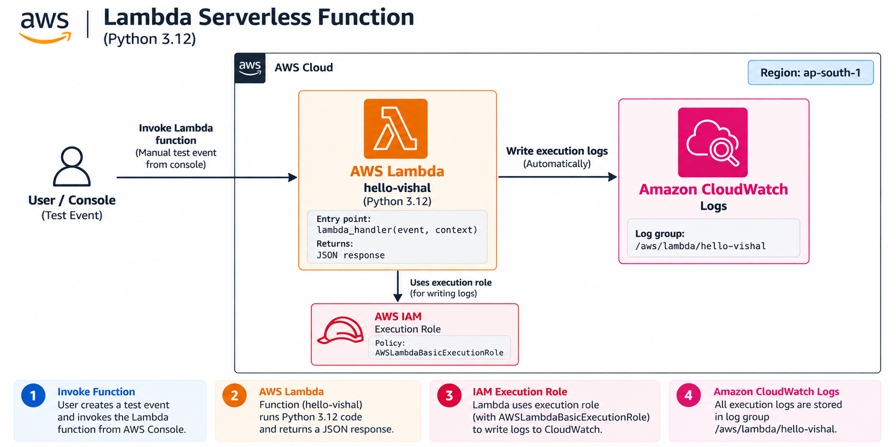
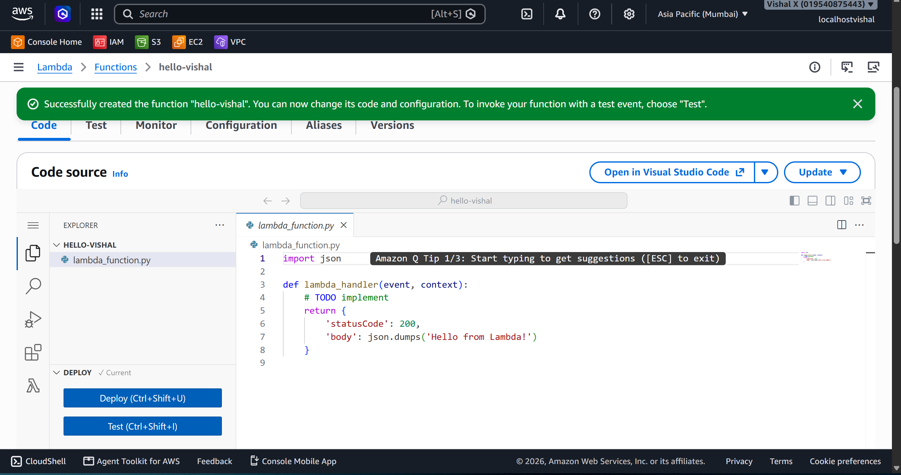
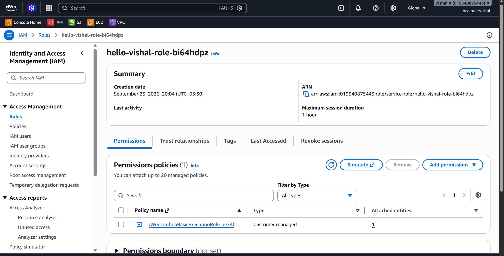
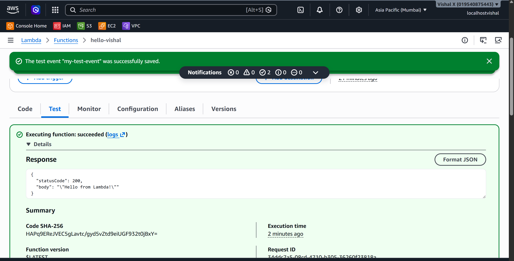
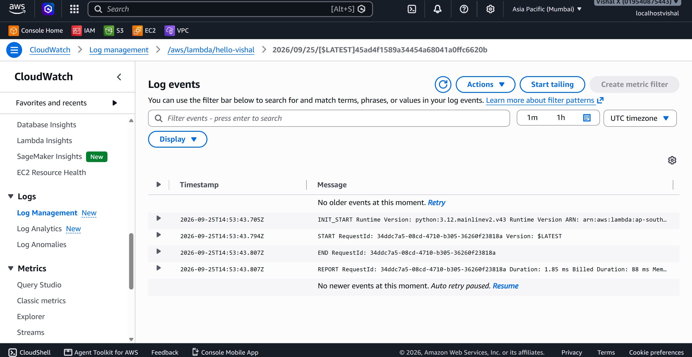
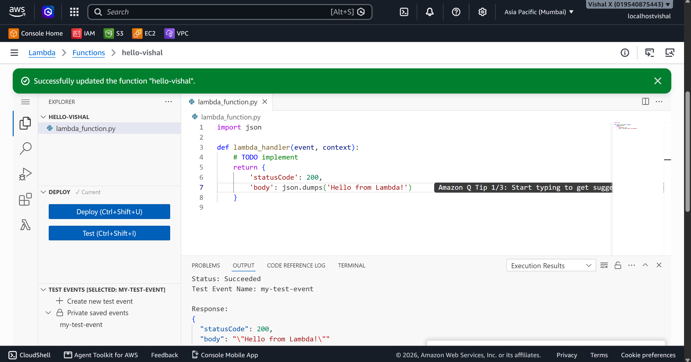

Lambda Serverless Function
Twelfth project. Wrote and ran my first Lambda function — created a Python function from scratch, tested it with a manual event, viewed the execution logs in CloudWatch, and deliberately broke it to understand how errors surface and get fixed.
What I built
A Python Lambda function that returns a JSON response when invoked. No servers, no EC2, no OS to manage — just code that runs when triggered. I tested it manually from the console, confirmed the logs appeared in CloudWatch, and introduced a syntax error on purpose to see how Lambda handles failures.

Why Lambda
Every project before this needed an EC2 instance running 24/7 to execute code. Lambda flips that — the code only runs when something triggers it, and I only pay for the milliseconds it actually executes. Understanding Lambda is the foundation for everything serverless: APIs, file processing, database triggers, scheduled jobs. This project was about getting comfortable with how it works before building anything more complex on top of it.
Services used
| Service | What I used it for |
|---|---|
| Lambda | Runs the function code without managing servers |
| IAM | Provides the execution role Lambda uses to run |
| CloudWatch Logs | Stores all Lambda execution logs automatically |
Resources I created
| Resource | Value |
|---|---|
| Region | ap-south-1 |
| Function name | hello-vishal |
| Runtime | Python 3.12 |
| Log group | /aws/lambda/hello-vishal |
Steps
1. Created the Lambda function
- Open the Lambda console
- Click Functions → Create function
- On the Create function page:
- Select Author from scratch
- Function name:
hello-vishal - Runtime: Python 3.12
- Architecture: x86_64
- Permissions: Create a new role with basic Lambda permissions
- Click Create function
The console opens the code editor with a default lambda_handler function. This is the entry point — Lambda calls this every time the function is invoked.

2. Reviewed the execution role
- On the function page, click the Configuration tab → Permissions
- Click the role name link — it opens the IAM console
- The role has
AWSLambdaBasicExecutionRoleattached — this allows Lambda to write logs to CloudWatch
In production, only grant the specific permissions the function actually needs.

3. Tested the function
- On the function page, click the Test tab
- Click Create new event:
- Event name:
my-test-event - Template: hello-world
- Leave the default JSON payload
- Click Save
- Click Test to invoke the function
The results panel shows the status code, response body, duration, memory used, and log output.

4. Viewed CloudWatch logs
- Open the CloudWatch console
- In the left sidebar click Log groups
- Click
/aws/lambda/hello-vishal - Click the latest log stream
Each log stream corresponds to a Lambda execution. The logs show:
- START — invocation started
- Any print() output from the code
- END — function finished
- REPORT — duration, memory used, billed duration

5. Introduced and fixed an error
Introduced a syntax error in the code, clicked Deploy, then Test. The results panel showed the error immediately.
Fixed the code, clicked Deploy again, then Test — execution succeeded.
Key rule: always click Deploy after editing code. Changes don't take effect until deployed.

6. Cleaned up
- Lambda → Functions → tick
hello-vishal→ Actions → Delete → typedeleteto confirm → Delete
Screenshots
| # | File | Description |
|---|---|---|
| 01 | screenshots/01-lambda-function-created.png |
Lambda function created with code editor |
| 02 | screenshots/02-execution-role.png |
IAM execution role with basic Lambda permissions |
| 03 | screenshots/03-test-function.png |
Successful test execution with response |
| 04 | screenshots/04-cloudwatch-logs.png |
CloudWatch log stream showing START/END/REPORT |
| 05 | screenshots/05-error-fixed.png |
Successful re-test after fixing the error |
Commands
Testing
- Created a test event using the hello-world template
- Invoked the function manually and verified the response
- Confirmed logs appeared in CloudWatch
- Introduced a syntax error, observed the failure, fixed it, and re-tested
Things that can go wrong
| Problem | What caused it | How I fixed it |
|---|---|---|
| No logs in CloudWatch | Execution role missing CloudWatch permissions | Attached AWSLambdaBasicExecutionRole |
| Code changes not taking effect | Forgot to click Deploy | Clicked Deploy before testing |
| Test event not found | Event not saved | Created and saved the test event first |
| Function times out | Default 3-second timeout too short | Increased timeout in Configuration → General configuration |
Security considerations
- The execution role should only have permissions the function actually needs
- Never hardcode credentials in Lambda code — use environment variables or IAM roles
- If exposing Lambda via a function URL, enable authentication
Cost
Lambda free tier: 1 million requests and 400,000 GB-seconds per month. For a simple hello-world function the cost is effectively zero. Delete the function after the exercise if not needed.
What I learned
- Lambda is truly serverless — no EC2, no OS, just code that runs when triggered
- The execution role controls what AWS services the function can access
- CloudWatch Logs captures every invocation automatically — no setup needed
- The Deploy button must be clicked after editing code before testing
- Lambda scales automatically — no configuration needed for that